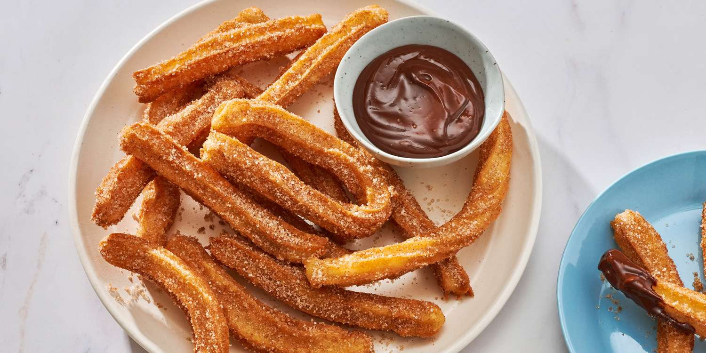

Churros recipe

About
My favorite food, they are are crispy on the outside, yet wonderfully tender on the inside.
In this recipe will be covered the simple version and not other variations common in Brazil
Ingredients
- Water:This recipe for churros starts with a cup of water.
- Sugar:White sugar goes into the churro dough and into the cinnamon-sugar topping.
- Salt:A pinch of salt enhances the flavors of the other ingredients.
- Oil:You'll need vegetable oil for the dough and to fry the churros.
- Flour:All-purpose flour gives the churro dough structure.
- Cinnamon:The fried churros are rolled in a cinnamon-sugar mixture before serving.